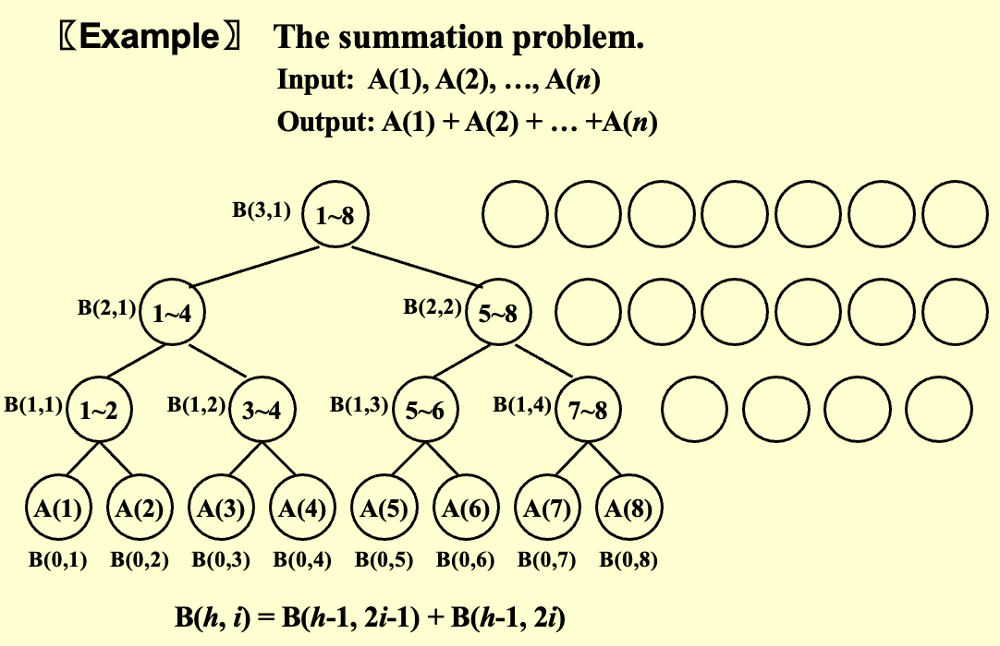
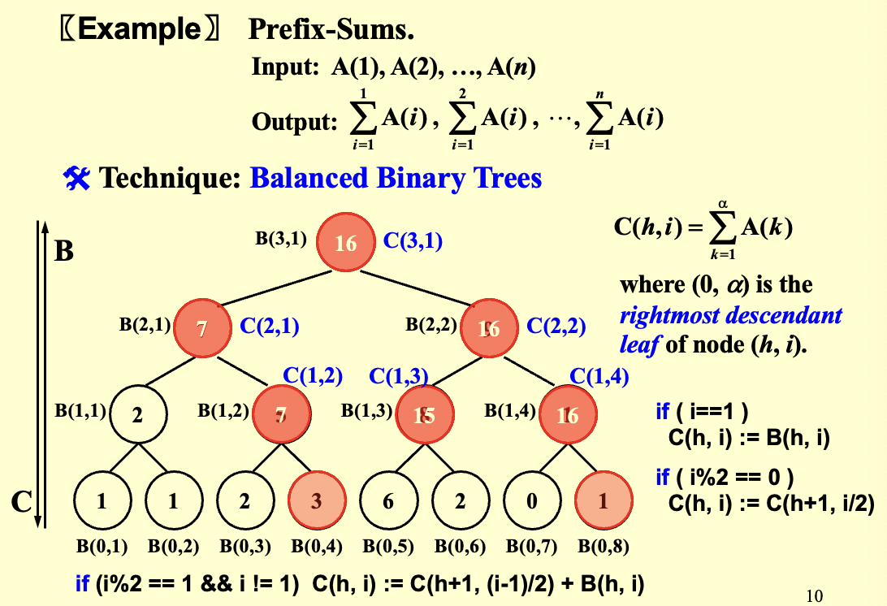
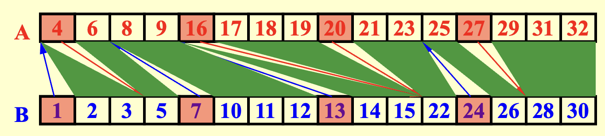
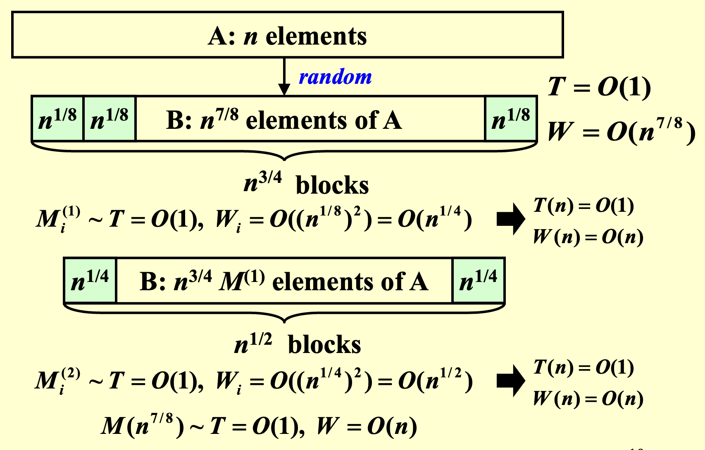

并行算法¶
并行性
- 机器并行性：处理器并行性、流水线、超长指令字
- 并行算法：描述方式有
PRAM和WD
性能度量¶
- 工作量：总操作数 \( W(n) \)
- 最坏情况运行时间：\( T(n) \)
- 处理器数量： \( P(n) = W(n)/T(n) \)
- \(W(n)/p\) 时间表示使用 \(p\) 个处理器时计算所需的时间，其中 \(p \leq W(n)/T(n)\) （否则，任务将不能有效分配到处理器上，可能会导致过多的空闲时间）
- 结合并行计算和串行计算的时间： \( W(n)/p + T(n) \)
所有情况在渐近意义下等价
并行随机存取机 PRAM¶
- 定义：多个处理器使用同一个共享内存（会有访问冲突问题）
- 访问冲突的解决
- 互斥读互斥写 (Exclusive-Read Exclusive-Write, EREW)
- 并发读互斥写 (Concurrent-Read Exclusive-Write, CREW)
- 并发读并发写 (Concurrent-Read Concurrent-Write, CRCW)
- 任意规则：最乱
- 优先级规则：编号最小的处理器优先
- 公共规则：除非所有处理器都试图写入相同的值，否则所有处理器都只能读
问题¶
多数相加问题¶

其中 \(B\) 为一个二维数组
- PRAM 伪代码
| C | |
|---|---|
时间复杂度：\(T(n)=\log n +2\)
缺点
- 隐藏了处理器数量影响：公式假设有恰好 \(n\) 个处理器，但未说明如果处理器更少时如何运行
- 指令分配过于理想化：假设处理器"知道"自己该做什么，但实际实现时需要显式的任务分配
- WD 伪代码：对开发人员友好，不需要考虑具体的处理器数量
| C | |
|---|---|
- 性能
- \(T(n) = \log n+2\)
- \(W(n) = n + \frac{n}{2} + \frac{n}{2^2} + \cdots + \frac{n}{2^k} + 1=2n\) 其中 \(2^k = n\)
- WD 表示充分性定理：任何 WD 模式下的算法，都可以在 \( O(W(n)/P(n) + T(n)) \) 时间内，由任意 \( P(n) \) 个处理器实现，且使用与 WD 表示中相同的并发写约定
前缀和问题¶

- 代码
2. 性能
- \(T(n) = O(\log n)\)
- \(W(n) = O(n)\)
数组合并¶
- 问题：将两个非递减数组合并成一个非递减数组
- 已知 \(A(1), A(2), ..., A(n)\) 和 \(B(1), B(2), ..., B(m)\)
- 合并为另一个非递减数组 \(C(1), C(2), ..., C(n+m)\)
假设
- \(A\) 和 \(B\) 的元素互不相同
- \(n=m\)
- \(\log n\) 和 \(n\log n\) 均为整数
- 技术：划分
- 划分：将输入划分为 \(p\) 个独立的小任务，使得最大小任务的大小约为 \(n/p\)
- 实际工作：并行执行这些小任务，每个任务使用一个单独的（可能是串行的）算法
- 解决方法：合并变为排名
规则
- \(RANK( j, A ) = i\)，若 \(A(i) < B(j) < A(i+1)\)，对于 \( 1 \leq i < n \)
- \(RANK( j, A ) = 0\)，若 \( B(j) < A(1) \)
- \(RANK( j, A ) = n\)，若 \( B(j) > A(n) \)
-
对每个 \( 1 \leq i \leq n \)，计算 \(RANK(i, B)\)，以及 \(RANK(i, A)\)
计算排名的方法
- 二分查找法：\(T(n)=O(\log n)\)，\(W(n)=O(n\log n)\)
C - 连续排名法：\(T(n)=W(n)=O(n+m)\)
-
根据计算结果得到 \(C\)
-
结论：给定排名问题的解，合并问题可以在 \(O(1)\) 时间和 \(O( n+m )\) 工作量内解决
- 并行排名算法

-
假设 \( n = m \) 并且 \( A(n+1) \) 和 \( B(n+1) \) 分别都大于 \( A(n) \) 和 \( B(n) \)
-
划分
- 采样数量：\(p = n / \log n\)
- \(A\_ Select( i ) = A(1+(i-1)\log n)\)，对于 \( 1 \leq i \leq p \)
- \(B\_ Select( i ) = B(1+(i-1)\log n)\)，对于 \( 1 \leq i \leq p \)
- 计算每个选定元素（路标）的 \(RANK\)
- 性能：\( T = O(\log n) \) 且 \( W = O(p\log n) = O(n) \)
- 实际排名
- 关键：\(A[i]\) 在 \(B\) 中的排名一定在它的左右路标排名之间
- 最多 \( 2p \) 个规模较小的问题，每一个时间复杂度为 \( O(\log n) \)
- 性能：\( T = O(\log n) \) 且 \( W = O(p\log n) = O(n) \)
- 总性能：\(T = O(\log n)\) 且 \(W = O(n)\)
最大值查找¶
- 并行比较算法
- 性能：\(T(n)=O(1)\) 且 \(W(n)=O(n^2)\)
- 双对数方法 1：按照 \(\sqrt{n}\) 划分
- 假设 \(h = \log \log n\) 是一个整数（即 \(n = 2^{2^h}\)）
-
按 \(\sqrt{n}\) 划分为 \(\sqrt{n}\) 个子问题
划分
\[ \begin{aligned} A_1 &= A(1), \dots,A(\sqrt{n}) & \Rightarrow & M_1 \sim T(\sqrt{n}), W(\sqrt{n})\\ A_2 &= A(\sqrt{n}+1), \dots,A(2\sqrt{n}) & \Rightarrow & M_2 \sim T(\sqrt{n}), W(\sqrt{n})\\ \vdots \\ A_{\sqrt{n}} &= A(n-\sqrt{n}+1), \dots,A(n) & \Rightarrow & M_{\sqrt{n}} \sim T(\sqrt{n}), W(\sqrt{n}) \end{aligned} \] -
使用并行比较算法将每个子问题合并得到最终最大值 \(A_{max} \sim T=O(1),W=O(\sqrt{n}^2)=O(n)\)
-
建立递归关系
\[ T(n) \leq T(\sqrt{n}) + c_1\qquad W(n) \leq \sqrt{n} W(\sqrt{n}) + c_2 n \] -
解得性能：
\[ T(n)=O(\log \log n)\qquad W(n)=O(n\log \log n) \]
- 双对数方法 2：按照 \(h=\log \log n\) 划分
-
划分
划分
\[ \begin{aligned} A_1 &= A(1), \dots,A(h) & \Rightarrow & M_1 \sim O(h)\\ A_2 &= A(h+1), \dots,A(2h) & \Rightarrow & M_2 \sim O(h)\\ \vdots \\ A_{n/h} &= A(n-h+1), \dots,A(n) & \Rightarrow & M_{n/h} \sim O(h) \end{aligned} \] -
使用双对数方法 1将子问题合并 \(\sim T=O(\log \log (n/h)),W=O((n/h)\log \log (n/h))\)
-
性能
\[ \begin{aligned} T(n)&=O(h+\log \log (n/h))=O(\log \log n) \\ W(n)&=O(h\times(n/h)+(n/h)\log \log (n/h))=O(n) \end{aligned} \]
- 随机采样
示意图

- 步骤：
- 随机采样 \(n^{\frac{7}{8}}\) 个元素 \(\sim T=O(1)\quad W=O(n^{\frac{7}{8}})\)
- 将采样得到的元素按照每块 \(n^{\frac{1}{8}}\) 划分为 \(n^{\frac{3}{4}}\) 个块
- 利用并行比较算法找到每一块的最大值 \(\sim T=O(1)\quad W=O(n)\)
- 继续将得到的最大值划分为每块 \(n^{\frac{1}{4}}\) 个元素，共 \(n^{\frac{1}{2}}\) 块，找到每一块的最大值 \(\sim T=O(1)\quad W=O(n)\)
- 对得到的 \(n^{\frac{1}{2}}\) 个最大值使用并行比较算法得到最终解 \(M\) \(\sim T=O(1)\quad W=O(n)\)
- 迭代
- 淘汰小于等于 \(M\) 的元素
- 使用上述随机采样方法不断重复
- 随机采样 \(n^{\frac{7}{8}}\) 个元素 \(\sim T=O(1)\quad W=O(n^{\frac{7}{8}})\)
- 定理：
- 以极高概率，该算法在 \( O(1) \) 时间和 \( O(n) \) 工作量内找到最大值（在任意 CRCW PRAM 上）
- 未能找到最大值的概率为 \( O(1/n^c) \)，其中 \( c \) 为某个正常数